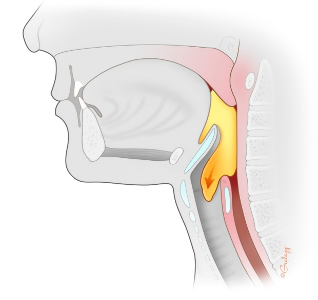

Seyam
Home
About
Github
LinkedIn
Twitter
Instagram
Facebook
🏠 home
📞 contact
🔬 research
📚 publications
🏗️ projects
✍️ blog
🔗 links
Publications
select year:
2024
2023
2022
2022

AI-Powered Toolkit for Automated Swallowing Kinematic Analysis in X-Ray Videofluoroscopy
Publication at 4th Novel Intelligent and Leading Emerging Sciences International Conference AUTHORS
Mohamed A. Seyam
,
Mohamed A. Abdelaziz
,
Mohamed K. Gallouln
,
Tamer Basha
Ervin Sejdic
Yassin Khalifa
Project page
Paper
Video
BibTex entry